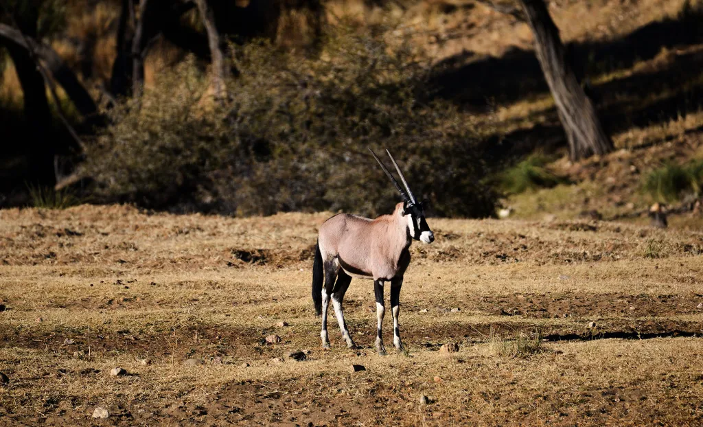
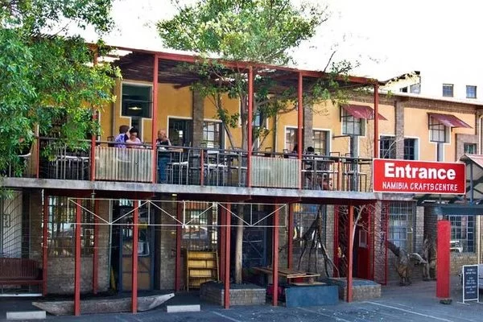

Top Attractions
Discover the must-see attractions in Windhoek.
Nature and Wildlife
Daan Viljoen Nature Reserve
A beautiful nature reserve known for its scenic landscapes and wildlife viewing opportunities. A perfect retreat for nature enthusiasts with diverse flora and fauna.

National Botanical Garden of Namibia
A botanical garden showcasing Namibia's unique plant life and biodiversity. Explore various themed sections, which provide insights into the country's vegetation.

Cultural Sites
Christuskirche (Christ Church)
A historic Lutheran church known for its beautiful architecture and historical significance. A prominent landmark on Windhoek’s skyline and has become an icon of the city.
.jpg)
Independence Memorial Museum
A museum that showcases Namibia's struggle for independence and commemorates the country's liberation heroes. This museum is a symbol of the country's journey towards self-rule.

Local Markets and Shopping
Namibia Craft Centre
A place where visitors can find various handmade Namibian crafts and souvenirs. A great place for visitors who want a piece of the local Namibian art, fashion, and heritage.

Post Street Mall
Windhoek's pedestrian mall where visitors can experience some of the vibrant local markets and culture. With numerous stores, cafes, and other attractions, it provides a fun, tourist-friendly shopping experience.